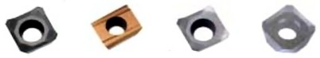

|
Alanýnda öncü firma olan Böhler Sert Maden firmasýnýn geliþtirmiþ olduðu talaþ geometrili takýmlardan bazýlarý aþaðýda verilmiþtir [1].
Þekil 4.3 ISO P Ve M Sýkma Sistemli Takýmlar Ýçin Negatif Mekanik Sýkmalý Uç Geometrileri [2]
Þekil 4.4 Orta Kaba Geometri [2]
Takýmlara baktýðýmýzda birçok deðiþik yapýda olabiliyorlar. Yalnýz bütün hepsinin tek bir ortak noktasý var talaþ kýrýcýlý olmasý. Buradaki amaç iþleme esnasýnda oluþan ýsýnýn takým üzerinde ki kýrýcýlar sayesinde daðýlýmýný yapmaktýr. Grafiklere baktýðýmýzda ise; mavi alan ideal talaþ kaldýrma iþleminin gerçekleþtiði alandýr.
Talaþ kýrýcýlarda yenilik olarak, uçlar büyük bir kalýnlýkta tutularak yüksek hýzlý ilerlemeye uygun hale de getirilmiþlerdir.
Þekil 4.5 Talaþ Kýrýcýlý Yüksek Ýlerleme Uçlarý [2]
Çepeçevre taþlanmýþ; keskin kesme kenarlý ve pozitif talaþ açýsýna sahip olan bu uçlarla mükemmel bir yüzey kalitesi elde edilir. Ayrýca uçlar prizmatik þekilleri sayesinde frezenin uç yuvasýna geniþ bir alanda temas yaparak çok saðlam bir þekilde baðlanmaktadýr. Çeliklerde ve döküm malzemelerde kaba operasyonlar için geliþtirilmiþ geometrilerdir [1].
4.2 Talaþ Kýrýcýsýz Geometriler:
Bu tip uçlar yüksek ilerleme uçlarý olup dayanýmlarý da yüksektir. Ýþleme yüzeyinden az zamanda çok yüksek talaþ atarlar. Modern tezgâhlarda yüksek kesme deðerlerinde kullanýlmakla birlikte hýzlý geçiþ yapabilen eski tezgâhlarda da kullanýlabilmektedirler [1]. Uç kýrýlmalarýna karþý gösterdiði yüksek direnç tabla ilerlemelerinde çalýþabilmeyi saðlar. Ayrýca derin boþaltma operasyonlarýnda en önemli kriterlerden biri olan vibrasyonsuz çalýþmayý saðlar. Üç ve daha fazla kenarlý kesme ucu sayesinde, kesme operasyonlarýnda daha düþük uç maliyeti saðlar.
Þekil 4.5 Talaþ Kýrýcýsýz Hýzlý Ýlerleme Takýmlarý [2]
Genelde kaba boþaltma iþlemlerde kullanýlan takýmlarda hýzlý ilerlemeye uygun geometriye sahip takým tercih edilir. Yalnýz ne kadar hýzlý ilerleme takýmý da olsa bazý üst limitleri henüz aþmýþ deðillerdir. Çünkü kalýpçýlýk sektörü hýzla ilerleme kat ettiðinden dolayý kullanýlan çeliklerin yapýsý da her geçen gün deðiþiyor.
Hýzlý ilerleme takýmlarý tezgahtan yatay yönde düþük miktarda güç çekerek iþ parçasý üzerinde yüksek hýzda ilerlemeye olanak saðlar. Ýþ parçasý malzemesine göre deðiþmekle birlikte bir tabla ilerlemesi 20.000 mm/dak.'a ulaþabilmektedir. Bu deðerler sayesinde iþin süresi %40 'a varan oranlarla kýsaltýlabilmektedir [1].
4.3 Demir Esaslý Olmayan Metaller Ýçin Geometriler:
Demir esaslý olmayan metaller için ise; mükemmel talaþ akýþý, yüksek ilerleme ve yüksek kesme hýzlarýnda takýmlarda geliþtirilmiþtir. Bu tip uçlarda kenar frezeleme ve kanal açma uygulamalarý için dikey olarak açýlý dalmakta mümkündür. Ayrýca bu tip takým kesme kenarýna karþý yönlendirilmiþ olup soðutma kanallarýna sahiptir.
|
|
 |
Þekil 4.6 Demir Esaslý Olmayan Metaller Ýçin Tavsiye Edilen Uçlar [2,5] |
4.4 Tornalama Takýmlarýnda Mikro Geometriler:
Tornalama; temel olarak tek nokta temaslý kesici takým ile silindirik þekiller yaratýr ve çoðu durumda iþ parçasý dönerken takým sabittir. Bu, pek çok yönden, tanýmlanmasý nispeten karmaþýk olmayan, en doðrudan metal kesme metodudur. Diðer taraftan, en yaygýn yöntem olarak kullanýlan ve geliþmeye en yaygýn yöntem olan tornalama, günümüzde, uygulamalardaki deðiþik faktörlerin çok dikkatli deðerlendirilmesini gerektiren, yüksek oranda uygun çözümlendirilmiþ bir iþlemdir [4].
Tornalama süreci, genellikle tek kesme kenarý iþlemi olmasýna karþýn; iþ parçasýnýn þekil ve malzemesi, iþlem tipi, þartlar, gereksinimler, maliyetler vs. nin kesme takýmýnýn birçok faktörü belirlemesi yönünden çeþitlidir. Bugünün tornalama takýmlarý, onlarca yýllýk deneyim, araþtýrma ve geliþtirme temel alýnarak dikkatlice tasarlanmýþtýr.
Mikro geometri ve kesme noktasýndaki takým malzemesinden, deðiþtirilebilir kesici ucun temel þekli ve dikdörtgen kesit saplý tip baðlanmasýna kadar, günümüz takýmlarý, yirmi otuz yýl önce düþünülmeyecek metal kesme dinamiklerine sahiptir. Tek nokta talaþ ilerlemelerinde geçerli olan bir çok kural, delik iþleme gibi diðer kesme metotlarýna da uygulanabilir. Ýþlemin en verimli þekilde gerçekleþtirilebilmesi için spesifik takým tipleri gerektiren bir çok temel tornalama iþlem tipi vardýr [4].
Mikro geometriler kesme aðzýndaki gözle görülmeyecek izlerdir. Ve genelde tek noktadan kesme iþleminin gerçekleþtiði takýmlarda bu yapý gözlemlenir.
|
|
|
Þekil 4.7 Mikro Geometriye Uygun Yüksek Ýlerleme Tornalama Takýmlarý [2,4] |
Tablo 1. Tornalamada Karþýlaþýlan Problemler ve Çözümleri [2]
|